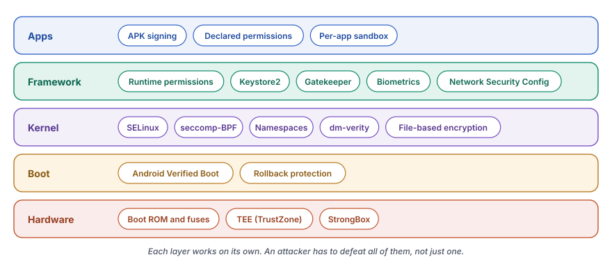

Android protects a device with many independent layers, from fused keys in the chip to the app sandbox. Attestation lets the device prove the state of those layers to a server.
Security in Android is not one feature. It is a set of layers, and each layer works even when a neighbor fails. The boot chain checks every image before it runs. The kernel confines every process with Security-Enhanced Linux (SELinux) and the secure computing filter (seccomp). Each app lives in its own sandbox, and keys live in secure hardware that the main operating system cannot read.
This chapter walks through those layers in the order in which they build on each other. It starts with the security model and SELinux. It continues with verified boot, the app sandbox, the Trusted Execution Environment (TEE), Keystore and user authentication. A large section then covers attestation, the way a device proves its own state to someone else. The chapter ends with encryption, network security, security updates and the changes in Android 17.
Chapter 4 already explained verified boot and dm-verity in detail. Chapter 9 explained Binder. This chapter links to both where it needs them.
The security model
Four principles shape every security decision in the Android source.
- App sandboxing. Each app runs with its own Linux user ID (UID), in its own process and with its own private data folder.
- Least privilege. An app starts with almost no permissions. The user or the system grants each extra right on its own.
- Defense in depth. No mechanism stands alone. The UID sandbox, SELinux, seccomp and the permission checks of the framework each block the same attack in a different way.
- Secure by default. New features ship locked down. A developer has to relax a rule on purpose.

The chain of trust
Trust in Android starts in hardware that nobody can change after the factory. The System on Chip (SoC) holds a public key in fuses, and its boot ROM uses that key to check the bootloader. The bootloader checks the kernel and the partitions. The kernel then loads the SELinux policy through init, and Zygote starts every app inside the sandbox.

If any link fails its check, the device notices. Depending on the policy, it refuses to boot, shows a warning or wipes data. The state of this chain also goes into every key attestation, as later sections show.
Security boundaries
A boundary separates code that the system trusts from code that it does not trust. Android draws five of them, and a different mechanism enforces each one.
| Boundary | Trusted side | Untrusted side | Enforced by |
|---|---|---|---|
| Hardware root of trust | Fused keys and the boot ROM | All software | Fuses and one-time programmable memory |
| TEE | The Trusty kernel and trusted apps | Linux and Android | ARM TrustZone and the secure monitor at EL3 |
| Kernel | Kernel code and loaded modules | All user space processes | Processor privilege levels EL0 and EL1 |
| System services | system_server and privileged daemons | Apps and untrusted code | SELinux and Linux DAC |
| App sandbox | The process and data of one app | Other apps and the system | UID, SELinux, seccomp-BPF and mount namespaces |
DAC stands for discretionary access control, the classic Linux model in which owners set file permissions. EL0 and EL1 are ARM exception levels, the privilege levels of user space and the kernel.
The threat model
Each layer answers a specific attacker. The model names five of them.
| Attacker | Goal | Main defense |
|---|---|---|
| A malicious app | Steal data from other apps or gain privileges | App sandbox, SELinux and seccomp |
| A network attacker | Read or change traffic, for example on public Wi-Fi | Transport Layer Security (TLS), the Network Security Config and pinning |
| A physical attacker | Read data from a lost or stolen phone | File-based encryption, the lock screen and verified boot |
| A supply chain attacker | Plant code in the system image or bootloader | Verified boot, dm-verity and rollback protection |
| A compromised component | Abuse the privileges of a hardware abstraction layer (HAL) or vendor service | SELinux neverallow rules and narrow HAL domains |
App signing
Every Android Package (APK) carries a signature before it can install. The signature identifies the developer, and the package manager uses it in three ways. An update must carry the same key as the installed app. Two apps with the same key can share a UID. A permission with the signature level goes only to apps signed with the key of the app that declared it.
| Scheme | Since | Idea |
|---|---|---|
| v1 (JAR) | Android 1.0 | Signs each ZIP entry through META-INF/ |
| v2 | Android 7.0 | Signs the whole APK as one binary block |
| v3 | Android 9 | Adds key rotation |
| v4 | Android 11 | A separate .idsig file for incremental installs |
| v3.1 | Android 13 | Adds rotation-min-sdk-version |
Permissions
A permission has a protection level. A normal permission, such as INTERNET, comes at install time. A dangerous permission, such as CAMERA or READ_CONTACTS, needs the consent of the user at runtime. A signature permission goes only to apps with a matching signing key or to the platform.
The system checks permissions at three levels. The framework calls Context.checkPermission(). A Binder service checks the UID and process ID (PID) of its caller. The kernel then applies SELinux and DAC, so a bug in a framework check still meets a wall below it.
Users and profiles
Android supports several users on one device. Each user gets a user ID such as 0, 10 or 11, separate encryption keys and separate lock screen credentials. The UID of an app for a user is the app ID plus the user ID times 100000. SELinux adds Multi-Level Security (MLS) categories from the user ID, so the kernel itself keeps users apart.
A work profile uses the same machinery for companies. Work apps run under a separate user ID with a separate encryption key. An administrator can wipe the work profile without a change to the personal data. The device policy controller decides which data can cross between the two profiles.
Think of a bank building. A guard checks badges at the door. Inside, each office has its own lock. The vault has a time lock, and only the vault itself can open it. Cameras record who goes where.
A thief who steals a badge still meets the office locks. A thief who picks an office lock still meets the vault. Android follows the same idea. Each layer assumes that the one in front of it can fail.
SELinux on Android
SELinux adds mandatory access control (MAC) to the kernel. In classic DAC, the owner of a file decides who can read it, and root can read everything. Under MAC, one central policy decides. Even a process with root rights cannot step outside it. Android runs SELinux in enforcing mode since Android 5.0, for every process on the device.
The policy tree
The policy lives in system/sepolicy/. The build compiles it into a binary policy, and init loads it early in the boot. The most important folders are these.
| Folder | Content |
|---|---|
public/ | Types and attributes that vendor policy can use |
private/ | The allow and neverallow rules of the platform, plus the context files |
vendor/ | Policy for the default HAL implementations |
compat/ | Mappings of type names between platform versions |
mac_permissions/ | Maps app signing certificates to seinfo tags |
microdroid/ | Policy for the Microdroid protected virtual machine |
tests/ | Policy tests that also run in the Compatibility Test Suite (CTS) |
Types, domains and rules
SELinux gives every process a domain and every object a type. An object means any item that a process can touch, such as a file, a socket, a Binder service or a property. Access happens only if an explicit rule allows it. Everything else is denied.
allow source_domain target_type:object_class permissions;An attribute groups many types, so one rule can cover them all. The attribute domain belongs to every process type, and private/domain.te holds the rules for all processes. Even these global rules stay narrow. Every process can open /dev/binder, but only an allowlist of Binder ioctls is permitted.
# /dev/binder can be accessed by ... everyone! :)
allow { domain -hwservicemanager -vndservicemanager }
binder_device:chr_file rw_file_perms;
# Restrict binder ioctls to an allowlist.
allowxperm domain binder_device:chr_file
ioctl { unpriv_binder_ioctls };Domain transitions
When a process runs a new binary, SELinux can move it into a new domain. This is how init starts each daemon in the right domain. The macro domain_auto_trans expands into three rules.
# When init runs /system/bin/vold, it moves to the vold domain.
domain_auto_trans(init, vold_exec, vold)
# expands to
type_transition init vold_exec:process vold;
allow init vold:process transition;
allow vold vold_exec:file { read getattr map execute entrypoint };Domains for apps
Apps do not start through exec, because Zygote forks them. So the file private/seapp_contexts maps each app to a domain from its properties. The selectors include user, seinfo, isPrivApp and minTargetSdkVersion.
isSystemServer=true domain=system_server_startup
user=_app minTargetSdkVersion=37 domain=untrusted_app type=app_data_file levelFrom=all
user=_app minTargetSdkVersion=34 domain=untrusted_app_34 ...
user=_app minTargetSdkVersion=32 domain=untrusted_app_32 ...
user=_app minTargetSdkVersion=30 domain=untrusted_app_30 ...
user=_isolated domain=isolated_app ...The versioned domains keep old apps working. An app that targets Android 17, application programming interface (API) level 37, gets the strictest domain, untrusted_app. An older app gets a domain with the rules of its own era. Each new release tightens the rules only for apps that opt in through their target API level.
Neverallow rules
A neverallow rule produces no runtime policy. It is an assertion that the build checks. If any rule, from Google or from a vendor, breaks it, the build fails. These rules protect the core promises of the platform.
# Do not allow untrusted apps to register services.
neverallow all_untrusted_apps service_manager_type:service_manager add;
# Do not allow untrusted apps to use VendorBinder
neverallow all_untrusted_apps vndbinder_device:chr_file *;
# Do not allow untrusted apps to connect to the property service
neverallow { all_untrusted_apps -mediaprovider } property_type:property_service set;
# Block calling execve() on files in an apps home directory.
neverallow { all_untrusted_apps -untrusted_app_25 -untrusted_app_27 -runas_app }
{ app_data_file privapp_data_file }:file execute_no_trans;For untrusted apps, the neverallow rules forbid these actions.
- Registering a service with
servicemanager. - Talking to vendor HALs directly through VendorBinder.
- Setting system properties.
- Reaching kernel interfaces such as uevent sockets, sysfs writes and debugfs.
- Executing files from the own data folder, for apps that target API 29 or higher. This rule enforces W^X, which means that memory or files are writable or executable but never both.
- Raw and netlink sockets. Only Transmission Control Protocol (TCP), User Datagram Protocol (UDP) and VSOCK sockets for virtual machines remain.
- Tracing a process in another domain with
ptrace.
HALs get their own neverallow rules in private/hal_neverallows.te. For example, only network HALs such as Wi-Fi, Bluetooth and telephony hold the net_admin and net_raw capabilities. A compromised camera HAL therefore cannot take over the network.
Platform and vendor policy
Project Treble split the policy in two halves, so that Google can update the platform without a new vendor image. The public/ types form the interface. Vendor policy can use them but cannot see private/ at all. The compat/ files keep old vendor policy valid after a type changes its name.
![On the left, the platform policy from Google. public/ holds exported types and attributes but no rules. private/ holds the allow and neverallow rules of the platform. compat/ maps old type names to new ones across platform versions. On the right, the vendor policy in vendor/, with files such as hal_keymint_default.te, hal_gatekeeper_default.te and file_contexts. Vendor policy can use the public types, but the private types are not visible to it, and compat feeds it the mappings. The build compiles both halves to CIL, merges them and checks every neverallow rule. init loads the result from /vendor/etc/selinux/precompiled_sepolicy and switches to enforcing.](../../assets/img/diagrams/se-sepolicy-split.svg)
The build runs in steps. First, m4 expands macros such as domain_auto_trans. Then both halves compile to the Common Intermediate Language (CIL), merge and pass the neverallow checks. At boot, init loads the result through /sys/fs/selinux/load and switches to enforcing mode. Chapter 4 shows this step inside the boot.
Context files
Labels come from context files. Each file maps one kind of name to a type.
| File | Maps |
|---|---|
file_contexts | File paths to file types |
property_contexts | System properties to property types |
service_contexts | Binder service names to service types |
seapp_contexts | Apps to domains and data types |
mac_permissions.xml | Signing certificates to seinfo tags |
Fix a denial the right way
When SELinux blocks an action, the kernel logs a denial with the tag avc: denied. The tool audit2allow turns denials into candidate rules. Its output is a starting point, not a fix, because it grants the broadest rule that matches.
avc: denied { write } for pid=2456 comm="my_service"
path="/data/misc/my_service/config"
scontext=u:r:my_service:s0
tcontext=u:object_r:system_data_file:s0
tclass=file permissive=0Read the denial in four parts. The source is my_service, the target type is system_data_file, the class is file and the permission is write. A rule that lets the service write every system_data_file opens far too much. The right fix gives the folder its own type.
# file.te
type my_service_data_file, file_type, data_file_type;
# file_contexts
/data/misc/my_service(/.*)? u:object_r:my_service_data_file:s0
# my_service.te
allow my_service my_service_data_file:file create_file_perms;
allow my_service my_service_data_file:dir create_dir_perms;Rebuild the policy afterwards, and make sure that no neverallow rule breaks.
Categories that separate apps and users
The type untrusted_app is the same for every app. MLS categories keep two apps of that type apart. Each app process gets a set of categories from its UID and user ID.
u:r:untrusted_app:s0:c42,c256,c512,c768Two processes can share files only when their categories match. The levelFrom value in seapp_contexts decides the source. The value all uses both the app and the user, user uses the user only and app uses the app only. This keeps users, apps and work profiles apart inside the kernel, in addition to the UID.
DAC is like a house where each owner holds the keys and can lend them to anyone. SELinux is like an airport. Each badge names the exact doors that its holder can open. Even the airport director cannot walk into the cockpit, because the rules of the airport, not the rank of the person, decide.
Verified boot and the root of trust
Chapter 4 followed Android Verified Boot (AVB) step by step. The bootloader checks the signature of vbmeta, compares each image with its hash and sets up dm-verity for the large partitions. This chapter looks at AVB from the security side. The result of the boot checks becomes a fact that the rest of the system can prove.
Boot states
The bootloader ends the checks in one of four states. It shows the state as a color and passes it to the kernel in androidboot.verifiedbootstate. Android exposes it as the property ro.boot.verifiedbootstate.
![Four cards. GREEN means verified, with a locked bootloader and images signed with the key of the OEM, and appears in attestation as Verified (0). YELLOW means self-signed, with a locked bootloader and images signed with a key that the user set, and appears as SelfSigned (1). ORANGE means unverified, with an unlocked bootloader, no chain of trust and a warning at every boot, and appears as Unverified (2). RED means that verification failed, so the device does not boot or warns, and appears as Failed (3). The command adb shell getprop ro.boot.verifiedbootstate prints green, yellow, orange or red.](../../assets/img/diagrams/se-boot-states.svg)
A locked bootloader boots only images signed with the key of the device maker. The YELLOW state uses a key that the user installed instead. An unlocked bootloader still runs the checks but lets failures through. It shows an ORANGE warning at every boot, and the unlock itself wipes all user data. The unlock is visible to the outside world as well, because attestation records it.
Rollback protection
A signed but old image can still hold a known flaw. So each vbmeta carries a rollback index that only grows. The bootloader keeps the lowest allowed index in tamper-evident storage, such as Replay Protected Memory Block (RPMB). An older image with a lower index does not boot, and avb_slot_verify() returns AVB_SLOT_VERIFY_RESULT_ERROR_ROLLBACK_INDEX. AVB offers up to 32 rollback index locations, so separate partitions can move at their own pace.
From the bootloader to KeyMint
The bootloader does one more job that matters for attestation. Before it starts the kernel, it passes the boot facts to the TEE. These are the hash of the public key that verified the boot, the lock state, the boot state and a hash of the verified images. KeyMint stores them as the root of trust. This handover happens before Android starts, so a later compromise of Android cannot rewrite those facts.
Verified boot protects the device from tampered software. Attestation turns the result of verified boot into evidence that a server can check. The bridge between the two is the root of trust inside KeyMint.
The app sandbox
The sandbox is the oldest and most visible layer. It keeps one app away from the data and processes of every other app. Four independent walls build it.
![On the left, four nested layers around an app process named com.example.a. From the outside in, a mount namespace gives a private view of storage, seccomp-BPF filters system calls, the SELinux domain untrusted_app with MLS categories confines the process, and the Linux UID 10042 owns a data folder with mode 0700. On the right, four attempts and the layer that blocks each one. Reading the files of another app is blocked by the UID and DAC. Talking to vendor HALs or setting properties is blocked by SELinux. Loading a kernel module or mounting is blocked by seccomp-BPF. Seeing the storage of other apps is blocked by the namespace.](../../assets/img/diagrams/se-sandbox.svg)
One UID for each app
The package manager gives every app a unique Linux UID at install time, and the UID never changes. The data folder of the app belongs to that UID with mode 0700. No other process without root can read or write it. Linux DAC enforces this wall, so it works even without SELinux.
SELinux domains for apps
On top of the UID, each app runs in an SELinux domain such as untrusted_app. The domain decides what the app can reach beyond its own files. The base rules for all apps live in private/app.te. They let apps use Keystore and Binder, but they forbid writes to /system, access to block devices and transitions into other domains.
# ptrace access to non-app domains.
neverallow appdomain { domain -appdomain }:process ptrace;
# Write to /system.
neverallow appdomain system_file_type:dir_file_class_set
{ create write setattr relabelfrom relabelto append unlink link rename };
# Transition to a non-app domain (prevent domain escalation).
neverallow { appdomain -shell }
{ domain -appdomain -crash_dump -rs -virtualizationmanager_domain }:process
{ transition };System call filtering
Every app process also runs under a seccomp filter written in Berkeley Packet Filter (BPF) code, called seccomp-BPF. The filter checks each system call before the kernel runs it. Bionic generates the filters from text files in bionic/libc/, such as SECCOMP_BLOCKLIST_APP.TXT.
| Blocked group | Examples | Reason |
|---|---|---|
| ID changes | setuid, setgid, setgroups | The identity is fixed after the start |
| Kernel modules | init_module, delete_module | A module runs with full kernel rights |
| Mounts | mount, umount2, chroot | A mount can bypass the storage view |
| Clocks | settimeofday, clock_settime | Time affects auth tokens and certificates |
| System control | reboot, swapon, acct, syslog | Denial of service or leaks of kernel logs |
A blocked call raises the signal SIGSYS, which normally ends the process with a crash report. Some calls, such as ptrace and unshare, stay outside the seccomp list. SELinux and other kernel rules limit them instead. Each layer covers what the others leave open.
Mount namespaces and process limits
Since Android 10, each app runs in its own mount namespace. The Filesystem in Userspace (FUSE) layer shows each app only its own view of shared storage. Apps that target Android 10 or later also see a filtered /proc/net. In addition, each app process has address space layout randomization (ASLR), stack canaries and limits on resources such as file descriptors and core dumps.
From Zygote to a sandboxed app
Zygote builds the sandbox at the start of each app. After the fork, the child runs SpecializeCommon in frameworks/base/core/jni/com_android_internal_os_Zygote.cpp. The order of the steps matters.
![Seven steps in order. First, fork, where the child starts as a copy of Zygote with its preloaded classes. Second, drop the capability bounding set and set up the storage view. Third, setgroups and setresgid, which join groups such as inet with GID 3003 and switch to the app GID. Fourth, install the seccomp filter, before the UID change because it needs a capability. Fifth, setresuid to the app UID, after which no capabilities remain. Sixth, selinux_android_setcontext moves the process from the zygote domain to untrusted_app. Seventh, close the Zygote socket, then load and run the code of the app.](../../assets/img/diagrams/se-zygote.svg)
The seccomp step comes before setresuid on purpose. Installing a filter needs a capability that the process loses with the UID change. At the end, the child holds no capabilities, sits in its own domain and cannot accept fork requests, because it closed the Zygote socket.
Some permissions still map to Linux groups during this step. INTERNET adds the group inet with group ID (GID) 3003. The socket decision itself now comes from an extended BPF (eBPF) program in the Connectivity module. The old kernel patch for paranoid networking is gone.
Isolated processes
An app can run part of its code in an isolated process with android:isolatedProcess="true". Such a process runs in the isolated_app domain with a fresh UID from a reserved range. It cannot open files, create sockets or call most services. It works only with file descriptors and sockets that its parent passes to it. WebView renderers use this domain, so a flaw in web content reaches almost nothing.
The SDK sandbox
Android 13 added the SDK Runtime, a separate process for advertising and analytics software development kits (SDKs). The SDK sandbox has its own UID and the domain sdk_sandbox. It cannot read the files of the host app, read device identifiers or ask for location. The host app talks to it through SdkSandboxManager in system_server.
Components and intents
Apps talk to each other through intents, and system_server checks each delivery. The receiver can require a permission. A component with android:exported="false" is closed to other apps. SELinux must allow the Binder call. Since Android 11, an app sees other apps only when it declares them in <queries>. A content provider adds read and write permissions, permissions for single paths and temporary grants for single Uniform Resource Identifiers (URIs).
The TEE and Trusty
Some secrets are too valuable for the main operating system. A kernel bug in Linux gives an attacker the whole kernel, and with it every key in memory. So Android keeps keys, passwords and biometric templates in a Trusted Execution Environment (TEE). The TEE is a small, separate operating system that runs next to Android on the same chip, isolated by hardware.
Two worlds on one chip
On ARM chips, TrustZone splits the processor and the memory into a normal world and a secure world. Android runs in the normal world. The TEE runs in the secure world. The TrustZone Address Space Controller (TZASC) blocks every access from the normal world to secure memory, at the level of the bus.
![On the left, the normal world with Android. The app runs at EL0 and calls the Keystore API. The KeyMint HAL and libtrusty run at EL0 and open /dev/trusty-ipc-dev0. The Linux kernel at EL1 holds the Trusty IPC driver, which writes the message to shared memory. On the right, the secure world with Trusty. Trusted apps such as the KeyMint TA, the Gatekeeper TA, the Storage TA and the Confirmation UI TA run at S-EL0 and are built into a signed image. The Trusty kernel, based on Little Kernel, runs at S-EL1. A shared ring buffer sits between the worlds. At the bottom, the secure monitor at EL3. The driver issues an SMC instruction, and the monitor dispatches to the Trusty kernel, which routes the message to the trusted app. The SMC instruction is the only door between the worlds, and the TZASC blocks normal-world access to secure memory.](../../assets/img/diagrams/se-trustzone.svg)
The only door between the worlds is the Secure Monitor Call (SMC) instruction. It traps into the secure monitor at exception level EL3, which hands the request to the TEE kernel. The TEE has its own page tables, so even the Linux kernel cannot map its memory.
Trusty
Trusty is the open source TEE of Google and the reference TEE for Android. Its kernel is based on Little Kernel (LK), a small real-time operating system. Trusted applications (TAs) run as user space processes above it. Trusty loads all TAs from one signed image at boot and allows no code loading at runtime. Its trusted computing base stays far smaller than Linux.
| Path | Content |
|---|---|
trusty/kernel/ | The Trusty kernel, based on LK |
trusty/user/ | Trusted apps |
trusty/device/ | Configurations for each device |
system/core/trusty/keymint/ | The KeyMint HAL that talks to the KeyMint TA, in Rust |
system/core/trusty/gatekeeper/ | The Gatekeeper HAL |
system/core/trusty/storage/ | The proxy for secure storage |
system/core/trusty/libtrusty/ | The IPC library of the normal world |
Other TEEs exist as well. OP-TEE from Linaro is open source. QSEE from Qualcomm and Kinibi from Trustonic are proprietary. The Android HAL interfaces stay the same for all of them, so each vendor ships its own HAL that speaks to its own TEE.
Talking to a trusted app
The normal world reaches a TA through Trusty inter-process communication (TIPC). The library libtrusty opens the device /dev/trusty-ipc-dev0 and connects to a named service. The kernel driver writes each message into a shared ring buffer and issues the SMC. The Trusty kernel knows the identity of the caller, so the channel is authenticated.
const TRUSTY_KEYMINT_RUST_SERVICE_NAME: &str = "com.android.trusty.keymint";
fn inner_main() -> Result<(), HalServiceError> {
// Create connection to the TA
let connection =
trusty::TipcChannel::connect(args.dev.as_str(),
TRUSTY_KEYMINT_RUST_SERVICE_NAME)?;
let tipc_channel = Arc::new(Mutex::new(TipcChannel(connection)));
register_binder_services(&tipc_channel, ALL_HALS, SERVICE_INSTANCE)?;
// Send the HAL service information to the TA
send_hal_info(tipc_channel.lock().unwrap().deref_mut())?;
binder::ProcessState::join_thread_pool();
Ok(())
}A TIPC message holds at most 4000 bytes. The KeyMint HAL splits larger replies and joins them again. When Trusty runs in a virtual machine (VM) instead of TrustZone, libtrusty connects over a VSOCK socket.
Secure storage
The secure world usually cannot reach the file system. So a storage proxy in the normal world writes the files, for example under /data/vendor/ss. The storage TA encrypts each block and protects its integrity with a key that never leaves the TEE. The proxy only moves ciphertext. For counters that must survive tampering, the TA uses hardware such as RPMB.
Protected Confirmation
Protected Confirmation shows a prompt that the normal world cannot fake. The TA draws the prompt on the screen itself through a secure path, with the small rendering library libteeui. When the user confirms with a physical button, the TA signs the confirmed text. A server then knows that a human saw exactly that text, even if malware controls Android.
StrongBox
StrongBox goes one step further than the TEE. It is a separate secure element with its own processor, storage, true random number generator, clock and protection against physical tampering. It runs its own KeyMint instance. StrongBox supports fewer algorithms and runs slower than the TEE. It is optional, so an app asks for it with setIsStrongBoxBacked(true) and handles StrongBoxUnavailableException.
Keystore and KeyMint
The Android Keystore system lets apps create and use keys that never leave secure hardware. An app sees only an alias and a handle. The key material stays inside KeyMint, in the TEE or in StrongBox. Even an app that holds the key cannot export it.
Generations of the interface
| Generation | Interface | Since |
|---|---|---|
| Keymaster 0.x to 2.0 | C HAL | Android 4.3 to 7.0 |
| Keymaster 3.0 and 4.0 | HIDL | Android 8.0 and 9 |
| KeyMint 1.0 | AIDL | Android 12 |
| KeyMint 2.0 | AIDL | Android 13 |
| KeyMint 3.0 | AIDL | Android 14 |
| KeyMint 4.0 and 5.0 | AIDL | Later releases, with ML-DSA in version 5.0 for Android 17 |
The move to KeyMint replaced the HAL Interface Definition Language (HIDL) with the Android Interface Definition Language (AIDL). It also improved attestation and key upgrades and added Remote Key Provisioning.
The stack
The Keystore service, keystore2, is written in Rust and lives in system/security/keystore2/. It sits between apps and the KeyMint HAL. It keeps a database of keys, checks every caller and manages the operations that run in secure hardware.
![From top to bottom. An app uses KeyPairGenerator and KeyStore with the AndroidKeyStore provider and calls keystore2 over Binder. keystore2 is a Rust service in system/security/keystore2 with modules for SELinux checks, the key database, grants, enforcements, operations, super keys, the garbage collector and the RKP client. It calls the KeyMint HAL interfaces over Binder, namely IKeyMintDevice, ISharedSecret, ISecureClock and IRemotelyProvisionedComponent. These reach the KeyMint TA in the TEE at the TRUSTED_ENVIRONMENT level, or KeyMint on an optional StrongBox, through TIPC and SMC. On the right, the com.android.rkpd mainline module fills a pool of attestation keys signed by the Google RKP server and hands them to keystore2, and it talks to IRemotelyProvisionedComponent.](../../assets/img/diagrams/se-keystore-stack.svg)
The modules of keystore2 show its jobs. database stores the keys, permission runs the SELinux checks and enforcements checks authentication. operation manages running operations, and super_key protects the keys of each user. gc deletes keys, and remote_provisioning fetches attestation keys.
Security levels
| Level | Location of the key |
|---|---|
SOFTWARE | In software, only when no secure hardware exists |
TRUSTED_ENVIRONMENT | In the TEE, for example Trusty on TrustZone |
STRONGBOX | In a separate secure element |
The key database
keystore2 uses two SQLite databases. The persistent database holds the key entries in the table keyentry, with the key blobs in blobentry and the parameters in keyparameter. A key blob is the key material encrypted by KeyMint with a key that only KeyMint knows. The second database lives only for one boot and holds grants. A grant lets another UID use a key that it does not own.
Checks on every call
Each request passes several independent checks before a key does any work.
![A call to begin or generateKey passes four checks from left to right. First, SELinux checks the keystore2_key class, and a failure returns PERMISSION_DENIED. Second, the caller must own the key or hold a grant, and a failure returns KEY_NOT_FOUND. Third, for keys that need user authentication, the auth token must be valid and fresh, and a failure returns KEY_USER_NOT_AUTHENTICATED. Fourth, the KeyMint TA runs its own checks, and a failure returns an error code from KeyMint. When all four pass, the operation runs in secure hardware and the result returns to the app.](../../assets/img/diagrams/se-key-auth.svg)
The first check uses SELinux. keystore2 defines its own class keystore2_key with permissions such as use, delete, grant and get_info. A caller needs both the right UID and the right SELinux permission. For example, isolated processes and the SDK sandbox get no Keystore access at all.
allow { appdomain -isolated_app_all -ephemeral_app -sdk_sandbox_all }
keystore:keystore2_key { delete use get_info grant rebind update };The enforcements module then applies the rules of each key. A key can require a recent unlock, a fresh authentication for every use or an authentication within a time window. A key can also be usable only during early boot. Finally, KeyMint checks the same rules again inside the TEE, independent of Android.
Operations
A cryptographic operation has a life cycle. It starts with begin, takes zero or more update calls and ends with finish or abort. The TEE has only a few operation slots. When all slots are busy, keystore2 prunes the least recently used operation of another client to make room.
interface IKeyMintDevice {
KeyMintHardwareInfo getHardwareInfo();
KeyCreationResult generateKey(in KeyParameter[] keyParams,
in AttestationKey attestationKey);
KeyCreationResult importKey(...);
KeyCreationResult importWrappedKey(...);
byte[] upgradeKey(in byte[] keyBlobToUpgrade, in KeyParameter[] upgradeParams);
void deleteKey(in byte[] keyBlob);
void destroyAttestationIds();
BeginResult begin(in KeyPurpose purpose, in byte[] keyBlob,
in KeyParameter[] params, in HardwareAuthToken authToken);
void earlyBootEnded();
...
}Note the parameter attestationKey of generateKey. It selects the key that signs the attestation certificate of the new key, which the attestation section explains.
Super keys, garbage collection and import
A super key protects the Keystore data of one user. keystore2 encrypts some keys again with it. It uses the Advanced Encryption Standard (AES) in Galois/Counter Mode (GCM) or Elliptic Curve Diffie-Hellman (ECDH) on the P-521 curve. When the device locks, keystore2 wipes the plain super keys from memory. Keys that require an unlocked device then stop working until the next unlock.
When a key is deleted, the garbage collector asks KeyMint to delete the blob and then removes the database rows. A key can also enter Keystore from outside. A plain import sends the key material to the TEE for a short moment. A wrapped import encrypts the key for a transport key first, so the plain key never exists outside secure hardware.
Think of a safe deposit box in a bank. You never take the gold home. You ask the clerk to stamp a document with your seal, and the clerk does it inside the vault. The clerk checks your identity every time, and the vault checks the clerk. Keystore is the clerk, KeyMint is the vault and your key never leaves it.
User authentication
A key can require that the user is present. The user proves it with a strong biometric or with a lock screen knowledge factor (LSKF). An LSKF is a personal identification number (PIN), pattern or password. Each path ends in the same object, a HardwareAuthToken (HAT) that secure hardware signs and KeyMint checks.
Gatekeeper
Gatekeeper checks the LSKF inside the TEE. At enrollment, the TA computes a hash-based message authentication code (HMAC) over the secret with a hardware-bound key. It returns the result as a password handle. Android stores only the handle, never the password. To change the password, the user must first enter the old one.
At unlock, LockSettingsService derives a secret from the PIN and calls verify on the Gatekeeper HAL. The TA compares the HMAC with the handle. On a match, it returns a HAT. On a mismatch, it raises a failure counter and returns a timeout.
class TrustyGateKeeperDevice : public BnGatekeeper {
public:
::ndk::ScopedAStatus enroll(int32_t uid,
const std::vector<uint8_t>& currentPasswordHandle,
const std::vector<uint8_t>& currentPassword,
const std::vector<uint8_t>& desiredPassword,
GatekeeperEnrollResponse* _aidl_return) override;
::ndk::ScopedAStatus verify(int32_t uid, int64_t challenge,
const std::vector<uint8_t>& enrolledPasswordHandle,
const std::vector<uint8_t>& providedPassword,
GatekeeperVerifyResponse* _aidl_return) override;
...
};The throttle lives in the TEE, so Android cannot skip it. The reference table in system/gatekeeper/gatekeeper.cpp allows five failures without delay. After that, the waits are 1, 5, 15, 30 and 90 minutes, then 4, 12 and 36 hours, then days and finally years. It is a fixed table, not a doubling.
Weaver
Weaver is an optional HAL that makes guessing even harder. It runs on a separate secure element and offers a fixed number of slots. Each slot holds a key and a value, and the value comes back only for the correct key. Android stores a secret derived from the synthetic password as the value, with a secret derived from the LSKF as the key.
The contract in IWeaver.aidl is strict. Each slot counts failures, and the count survives reboots. The count goes up before the key comparison and resets only on success, so no guess escapes the count. A read during a throttle reveals nothing. The reference TA in system/weaver/ uses the same steep timeout table as Gatekeeper.
Biometrics
Fingerprint and face sensors have AIDL HALs under hardware/interfaces/biometrics/. A session interface covers enrollment, authentication, lockout and the callbacks of sensors under the display. The matching runs in the TEE, and the templates never leave it.
| Class | Meaning | Unlocks Keystore keys |
|---|---|---|
CONVENIENCE | Easy to fool, for comfort only | No |
WEAK | Harder to fool, but no cryptographic proof | No |
STRONG | Meets the CDD limits on spoof and false accept rates and produces a HAT | Yes |
The Compatibility Definition Document (CDD) sets the rules for lockout. After five failures, a biometric locks for 30 seconds. After 20 failures in total, it locks until the user enters the LSKF. The lockout state survives reboots and crashes of the HAL.
One token for all factors
All factors produce the same HAT. It holds the user ID, the authenticator type, a timestamp and an HMAC. At boot, the TAs agree on the HMAC key through ISharedSecret. Each one adds a nonce, and each one derives the same key. KeyMint checks the HMAC of every token with that key.
![At the top, at boot, ISharedSecret lets KeyMint, Gatekeeper and the biometric TAs each add a nonce and derive the same HMAC key. Below, three sources. A PIN, pattern or password goes through LockSettings to the Gatekeeper TA. A fingerprint goes through BiometricService to the Fingerprint TA. A face goes to the Face TA. Each TA produces a HardwareAuthToken with the user ID, the authenticator, the time and an HMAC. keystore2 and KeyMint check the HMAC with the shared key and then release auth-bound keys for the timeout of each key. All three factors produce the same token.](../../assets/img/diagrams/se-hat.svg)
So an auth-bound key does not care which factor the user chose. It only checks that the token is valid, recent enough for its timeout and from an allowed authenticator type. An app asks for this with setUserAuthenticationParameters on KeyGenParameterSpec.
BiometricPrompt
Apps never talk to sensors. They call BiometricPrompt, which shows a system dialog, picks the available sensors, falls back to the LSKF and manages lockout. With a CryptoObject, the prompt binds the authentication to one cryptographic operation. The resulting token then unlocks exactly that operation in Keystore.
val spec = KeyGenParameterSpec.Builder("payment_key",
KeyProperties.PURPOSE_SIGN)
.setAlgorithmParameterSpec(ECGenParameterSpec("secp256r1"))
.setDigests(KeyProperties.DIGEST_SHA256)
.setUserAuthenticationRequired(true)
.setUserAuthenticationParameters(0, KeyProperties.AUTH_BIOMETRIC_STRONG)
.build()A timeout of 0 means that every signature needs its own authentication through BiometricPrompt with a CryptoObject.
Attestation
Every layer so far protects the device from the inside. Attestation answers a different question. A server talks to an app on a phone that it has never seen. The server wants to know whether the key of that app really lives in secure hardware. It also wants to know whether the phone runs a locked and verified system.
The app cannot simply say so. If the system is compromised, the app says whatever the attacker wants. So the statement has to come from a part of the device that the attacker cannot control. It also needs a signature that the server can check. In Android, that part is KeyMint. The statement is an X.509 certificate chain.
![Three areas. The device holds the app, keystore2 and KeyMint in the TEE or StrongBox. KeyMint creates the key pair, writes the key properties and the boot state and signs the certificate with an attestation key that never leaves the secure hardware. Your server makes a random challenge, checks the chain, the challenge and the properties and then decides to trust the key or not. Google publishes the attestation root keys and the revocation status list at android.googleapis.com/attestation. In step 1 the server sends the challenge to the app. In step 2 the app sends the certificate chain to the server. In step 3 the server uses the roots and the revocation list from Google.](../../assets/img/diagrams/se-attest-idea.svg)
Attestation is a signed statement from secure hardware about a key and about the device that holds it. The server checks the signature and the content. The app only carries the message and cannot change it.
Android offers two levels of attestation. Key attestation is the platform feature. KeyMint signs a certificate for one key, and your server checks it directly. Device attestation through the Play Integrity API builds on key attestation and other signals, and Google checks them for you. This section explains both, starting with the base.
Key attestation in one request
Key attestation arrived in Android 7.0 with Keymaster 2. An app asks for it with one extra line when it creates a key. The line passes a challenge, a random value that the server created for this request only.
val challenge: ByteArray = serverChallenge // random, from your server
val spec = KeyGenParameterSpec.Builder("login_key",
KeyProperties.PURPOSE_SIGN)
.setAlgorithmParameterSpec(ECGenParameterSpec("secp256r1"))
.setDigests(KeyProperties.DIGEST_SHA256)
.setAttestationChallenge(challenge) // turns on attestation
.build()
KeyPairGenerator.getInstance(KeyProperties.KEY_ALGORITHM_EC, "AndroidKeyStore")
.apply { initialize(spec) }
.generateKeyPair()
val chain = KeyStore.getInstance("AndroidKeyStore")
.apply { load(null) }
.getCertificateChain("login_key") // send all of it to the serverInside KeyMint, three things happen. KeyMint creates the key pair. It writes a description of the key, the challenge and the state of the device into a certificate. It signs that certificate with an attestation key, a private key that lives only in secure hardware.
The certificate chain
The app receives a list of certificates. The first one describes the new key. Each following certificate signs the one before it, up to a root certificate of Google.
![Four certificates, leaf first. Index 0 is the leaf certificate with the subject CN=Android Keystore Key. It holds the public key of the new app key and the key attestation extension with OID 1.3.6.1.4.1.11129.2.1.17. Index 1 is the attestation key certificate, from a factory batch key or an RKP key. Its key signs the leaf inside KeyMint, and it belongs to one device or to a batch of at least 100,000 devices. Next come intermediate certificates, where an RKP chain carries the provisioning information extension with OID 1.3.6.1.4.1.11129.2.1.30, which holds the issued count and the TEE or StrongBox level. Last is a Google attestation root certificate, to compare with the published roots. A new root with the subject CN=Key Attestation CA1 signs chains from 1 February 2026. Each certificate is signed by the next one. KeyStore.getCertificateChain(alias) returns this list, leaf first.](../../assets/img/diagrams/se-attest-chain.svg)
The leaf certificate looks the same on every device. Its subject is CN=Android Keystore Key and its serial number is 1. These fixed values keep the leaf from identifying the device. Its validity starts at the creation time of the key, unless the key sets an active date. The public key in the leaf is the public half of the new app key.
The second certificate belongs to the attestation key. With factory provisioning, the device maker installed this key in the factory. The same key went into a batch of at least 100,000 devices, so that the key does not single out one phone. With Remote Key Provisioning, the key comes from a Google server instead, as a later part explains.
The attestation extension
The facts live in one X.509 extension of the leaf, with the object identifier (OID) 1.3.6.1.4.1.11129.2.1.17. Its value is a sequence in Abstract Syntax Notation One (ASN.1), encoded with the Distinguished Encoding Rules (DER), called KeyDescription.
KeyDescription ::= SEQUENCE {
attestationVersion INTEGER, # 500
attestationSecurityLevel SecurityLevel,
keyMintVersion INTEGER,
keyMintSecurityLevel SecurityLevel,
attestationChallenge OCTET_STRING,
uniqueId OCTET_STRING,
softwareEnforced AuthorizationList,
hardwareEnforced AuthorizationList,
}
SecurityLevel ::= ENUMERATED {
Software (0),
TrustedEnvironment (1),
StrongBox (2),
}The version tells the parser which fields to expect. Each version of Keymaster or KeyMint has its own number.
| attestationVersion | Version of the HAL |
|---|---|
| 1, 2, 3, 4 | Keymaster 2.0, 3.0, 4.0 and 4.1 |
| 100, 200, 300 | KeyMint 1.0, 2.0 and 3.0 |
| 400 | KeyMint 4.0, adds moduleHash |
| 500 | KeyMint 5.0, adds mlDsaVariant |
![On the left, the KeyDescription sequence with eight fields. attestationVersion, for example 500. attestationSecurityLevel, for example TEE. keyMintVersion and keyMintSecurityLevel. attestationChallenge, which holds your nonce. uniqueId, which is usually empty. softwareEnforced and hardwareEnforced, which are two AuthorizationList records. On the right, selected tags of an AuthorizationList. Tag 1 purpose, such as SIGN or ATTEST_KEY. Tags 2 and 3 algorithm and keySize, such as EC, RSA or ML_DSA. Tag 503 noAuthRequired or tag 504 userAuthType. Tag 702 origin, GENERATED or IMPORTED. Tag 704 rootOfTrust with the boot key, the lock flag, the boot state and the boot hash. Tag 705 osVersion, for example 170000. Tag 706 osPatchLevel, for example 202610. Tag 709 attestationApplicationId with the package and its signer. Tags 710 to 717 attestationId values, present only with ID attestation. Tags 718 vendorPatchLevel and 719 bootPatchLevel, for example 20261005. Tag 724 moduleHash, from version 400. Trust the hardwareEnforced list, because the softwareEnforced list is only as good as the Android build.](../../assets/img/diagrams/se-key-description.svg)
Two lists of properties
The two AuthorizationList fields hold the properties of the key, such as its purpose, algorithm, size and authentication rules. They differ in who enforces them.
hardwareEnforcedholds what the secure hardware itself collected or enforces. The Android system cannot change it.softwareEnforcedholds what Android enforces. It is only as trustworthy as the Android build on the device.
For any security decision, read the hardware list. One tag in the software list, however, deserves attention. The application ID usually sits there, as the next part shows.
The field attestationSecurityLevel tells you which component signed the statement. If it says Software, nothing in the record carries hardware weight. Treat such a key like any key that an app created in plain code.
The root of trust
Tag 704, rootOfTrust, carries the facts that the bootloader gave to KeyMint before Android started.
RootOfTrust ::= SEQUENCE {
verifiedBootKey OCTET_STRING, # hash of the key that verified the boot
deviceLocked BOOLEAN,
verifiedBootState VerifiedBootState,
verifiedBootHash OCTET_STRING, # digest of the verified images
}
VerifiedBootState ::= ENUMERATED {
Verified (0), # GREEN
SelfSigned (1), # YELLOW
Unverified (2), # ORANGE, verifiedBootKey is 32 zero bytes
Failed (3), # RED
}A typical server policy for sensitive actions accepts only deviceLocked true with Verified. The value verifiedBootKey also tells you whose key signed the system. Two phones of the same model with the stock system share this value. A phone with a custom system, locked with a personal key of the user, shows SelfSigned and a different key hash.
Versions and patch levels
Four tags show how current the device is. The secure hardware records them, so a compromised system cannot fake a newer patch.
| Tag | Field | Format and example |
|---|---|---|
| 705 | osVersion | Six digits, 170000 for Android 17.0.0 |
| 706 | osPatchLevel | Year and month, 202610 for the October 2026 patch |
| 718 | vendorPatchLevel | Date of the vendor image patch without dashes, such as 20261005 |
| 719 | bootPatchLevel | Date of the kernel image patch without dashes |
A server can therefore refuse a device whose patches are more than a year old. KeyMint also binds the patch levels to each key blob. After an update, keystore2 calls upgradeKey. A key never moves back to an older system.
The identity of the app
Tag 709, attestationApplicationId, names the app that owns the key. It holds the package name and version code of each package in the UID. It also holds a Secure Hash Algorithm 256 (SHA-256) digest of each signing certificate. The Android system fills this field, so it usually appears in the software list.
Check the signing certificate digest on the server. A repackaged copy of your app carries a different signature. Its keys then show a different digest, even if the package name matches.
ID attestation
Since Android 8.0, KeyMint can also attest the hardware identifiers of a device. These are the brand, device, product, manufacturer, model, serial number, International Mobile Equipment Identity (IMEI) and Mobile Equipment Identifier (MEID). The device maker writes copies of them into secure storage in the factory. The user cannot change these copies, even with a modified system.
ID attestation is a privileged feature, because it identifies one device. A normal app cannot ask for it. Device owner apps and system apps with READ_PRIVILEGED_PHONE_STATE can. The attested values appear as tags 710 to 717, and tag 723 holds a second IMEI since Android 14. A device that supports the feature declares android.software.device_id_attestation. After destroyAttestationIds(), every such request fails with CANNOT_ATTEST_IDS.
Attestation keys and their weak spot
The whole scheme depends on the secrecy of the attestation keys. With factory provisioning, each batch key sat in the secure storage of 100,000 or more devices. One leaked key let an attacker sign false statements for any device. Google then had to revoke the whole batch, and every honest device in it lost its attestation at once.
Factory provisioning had other costs too. Each factory needed secure systems to inject keys. A key also stayed the same for the whole life of the device. Remote Key Provisioning addresses all three problems.
Remote Key Provisioning
Remote Key Provisioning (RKP) arrived with Android 12. The factory no longer installs any attestation key. It only uploads to Google a public key that identifies each device. That device key is the root of a chain built with the Device Identifier Composition Engine (DICE), which describes every boot stage.
Later, the device asks a Google server for attestation keys. The server checks that the request comes from a known device with a known boot chain and then signs short-lived certificates.
![Four lanes, keystore2, the rkpd app, the KeyMint HAL and TA and the RKP server. The rkpd app calls generateEcdsaP256KeyPair on KeyMint and gets MACed public keys. It calls fetchEekChain on the server and gets the GEEK chain and a challenge. It calls generateCertificateRequestV2 on KeyMint and gets a CSR in CBOR with the DICE chain. It sends the CSR to signCertificates on the server and gets an X.509 chain for each key. It stores the keys in the key pool. Later, keystore2 calls getKey for an app key and receives a pooled key and its chain. The pool refills on a schedule, so a new app key gets a chain without a network round trip.](../../assets/img/diagrams/se-rkp.svg)
The work happens in the mainline module com.android.rkpd, in packages/modules/RemoteKeyProvisioning. It runs in steps.
- Make key pairs. The rkpd app calls
generateEcdsaP256KeyPaironIRemotelyProvisionedComponent. KeyMint returns public keys with a MAC from a secret of the device. - Get the server key. The app fetches the Google Endpoint Encryption Key (GEEK) chain and a challenge from the server.
- Build the request. KeyMint builds a certificate signing request (CSR) in Concise Binary Object Representation (CBOR) with
generateCertificateRequestV2. The DICE chain of the device signs it. - Get the certificates. The server checks the device and returns an X.509 chain for each public key.
- Fill the pool. The app stores the keys in a database. A worker refills the pool on a schedule.
- Use a key. When an app asks for attestation,
keystore2takes a key from the pool. KeyMint signs the new leaf with it, and the RKP chain follows the leaf.
The gains are large. Each certificate lives for a short time, so a leaked key soon stops mattering. Google can revoke a single device instead of a batch. Devices that launch with Android 16 support only RKP. An RKP chain also carries the provisioning information extension, OID 1.3.6.1.4.1.11129.2.1.30, with an approximate count of recent certificates and the attested component, TEE or StrongBox.
Inside keystore2, the function RemProvState::get_rkpd_attestation_key_and_certs in remote_provisioning.rs decides the route. It uses RKP for asymmetric keys of apps when RKP is on for the device.
Attestation keys of your own
Since Android 12, an app can create its own attestation key. The app gives a key the purpose PURPOSE_ATTEST_KEY. It then names that key with setAttestKeyAlias when it creates further keys. KeyMint signs their leaves with the app key instead of a batch key or an RKP key, and the chain of the app key follows. This lets one server check attestation once and then trust a family of keys.
Verify on a server
The verification belongs on a server that you control. The device that you want to judge cannot judge itself, because a compromised system can fake the result of any local check. The Android developer guide lists the steps.
![Seven steps. First, send a fresh challenge that is random, single use and kept on the server with a short lifetime. Second, receive the whole chain, and never verify on the device that you want to trust. Third, check each signature up to the root, so that each certificate signs the one before it, and check that the dates are valid. Fourth, match the root against the Google roots from android.googleapis.com/attestation/root. Fifth, check every serial against the revocation list at android.googleapis.com/attestation/status. Sixth, read the first attestation extension, because only the first occurrence in the chain counts. Seventh, check the values, namely the challenge, the security level, the origin, the boot state, the lock flag, the patch levels and the app ID. The keyattestation library from github.com/android/keyattestation runs steps 3 to 7.](../../assets/img/diagrams/se-attest-verify.svg)
Google publishes the root keys as JavaScript Object Notation (JSON) at android.googleapis.com/attestation/root. A new root with the subject CN=Key Attestation CA1, OU=Android, O=Google LLC, C=US signs attestation chains from 1 February 2026. A verifier has to accept both the older roots and this new one. The revocation list lives at android.googleapis.com/attestation/status, and the Cache-Control header tells you when to fetch it again.
{
"entries": {
"2c8cdddfd5e03bfc": {
"status": "REVOKED",
"expires": "2020-11-13",
"reason": "KEY_COMPROMISE",
"comment": "Key stored on unsecure system"
}
}
}Each key in entries is a certificate serial number in lowercase hexadecimal. The status is REVOKED or SUSPENDED. The reason is UNSPECIFIED, KEY_COMPROMISE, CA_COMPROMISE, SUPERSEDED or SOFTWARE_FLAW.
Do not write the parser yourself. The Kotlin library keyattestation covers many cases that home-made verifiers miss, such as old chains that do not follow Request for Comments (RFC) 5280 exactly. The Android Open Source Project (AOSP) carries it in external/keyattestation, and Google publishes it at github.com/android/keyattestation.
val verifier = Verifier(
{ setOf(TrustAnchor(googleRootCertificate, null)) }, // trust anchors
{ revokedSerials }, // from the status list
{ Instant.now() }, // time source
)
when (val result = verifier.verify(certificateChain)) {
is VerificationResult.Success -> {
// Check the challenge, the security level, the boot state,
// the patch levels and the app ID against your policy.
}
else -> rejectDevice(result) // path, parsing, challenge or constraint failure
}The library validates the chain through its own CertPathValidator named KeyAttestation. It checks revocation with the serial numbers that you supply. A success result carries the attested public key, the challenge, the security level, the boot state and the device identity. The library also insists that the origin of the key is GENERATED and that both security levels match.
Common mistakes
- A check on the device. A compromised app or system can skip or fake a local check. Verify only on a server.
- A weak challenge. A fixed or reused challenge lets an attacker replay an old, valid chain. Make it random, use it once and let it expire.
- A look at the leaf only. A chain that does not end in a Google root proves nothing. An attacker can build such a chain with any key.
- The wrong extension. Only the first attestation extension in the chain counts. Do not assume that a later one belongs to your key.
- Trust in software properties. Base decisions on
hardwareEnforcedand onattestationSecurityLevel, not on the software list. - No revocation check. A revoked batch key still produces chains that look valid. Fetch the status list and respect its cache time.
- A fixed root. Roots change, as the new root of 2026 shows. Load the list of roots from the published file.
Device attestation with Play Integrity
Many apps do not need to parse certificates at all. The Play Integrity API asks Google to judge the device, the app and the account. On Android 13 and later, Google Play services uses hardware key attestation as one of its signals. Google checks it on its servers and returns a signed verdict.
![On the device, the app calls the Play Integrity API. Google Play services collects signals, including a hardware key attestation on Android 13 and later, from KeyMint with the boot state and the patch levels. The signals go to the Google Play servers, which return a signed verdict that your server decodes. The verdict has deviceIntegrity with labels such as MEETS_BASIC, MEETS_DEVICE and MEETS_STRONG, appIntegrity with PLAY_RECOGNIZED, accountDetails with LICENSED and requestDetails with the request hash and the time. Play Integrity builds on key attestation, and Google does the verification, but your server still decides.](../../assets/img/diagrams/se-play-integrity.svg)
Your server decodes the token and reads the verdict. First check requestDetails, the package name, the request hash or nonce and the time. Then read the labels of deviceRecognitionVerdict.
| Label | Meaning on Android 13 and later |
|---|---|
MEETS_BASIC_INTEGRITY | Basic system integrity checks pass. The bootloader can be unlocked, and the device need not be certified. The attestation root of trust comes from Google. |
MEETS_DEVICE_INTEGRITY | A genuine, certified Android device. Hardware-backed proof shows a locked bootloader and a certified image from the device maker. |
MEETS_STRONG_INTEGRITY | Device integrity, plus security updates within the last year for all partitions, including the Android OS patch and the vendor patch. |
MEETS_VIRTUAL_INTEGRITY | Only for apps in Google Play Games for PC, on an emulator that passes the checks. |
On Android 12 and lower, strong integrity needs only hardware-backed proof of boot integrity, without the patch rule. So also read deviceAttributes.sdkVersion. An empty verdict points to an attack such as API hooking, a rooted system or an emulator that fails the checks. Other fields report whether Google Play recognizes the app and whether the user got it from Google Play. They also report apps that can capture the screen or control the device.
| Need | Good fit |
|---|---|
| An app on Google Play that wants a quick verdict on device and app | Play Integrity API |
| Proof that one specific key lives in secure hardware | Key attestation of that key |
| Devices without Google Play services, or a fleet of company devices | Key attestation with your own server policy |
| Payments, account recovery and other high-value actions | Both, with the key attestation bound to the key that signs the action |
Attestation raises the cost of an attack but does not end the work of the server. A verdict says something about one device at one moment. Combine it with server-side limits, fraud checks and short-lived sessions.
Attestation inside the platform
Android also uses attestation between its own components. The new security VMs and the TEE do not share a Binder transport, so they need another way to trust each other.
- DICE chains. Each boot stage measures the next one and derives a key from the measurement. The chain of certificates describes the whole boot. RKP uses it to identify a device, and protected VMs use it to prove their own code.
- AuthGraph. An authenticated key exchange in
IAuthGraphKeyExchange, with a Rust reference insystem/authgraph/. Two parties run an ECDH exchange on P-256 and sign the session ID with their identity keys from a DICE chain. They end with two AES-256 session keys, one for each direction. - SecretKeeper. A HAL that keeps secrets for protected VMs and releases them only to a VM with the right identity. A VM reaches it through an AuthGraph session.
- AuthMgr. The authorization manager of the Secure Execution Environment checks a protected VM with a DICE-based challenge before the VM can reach trusted HALs.
Think of a notary. You cannot prove your own signature by saying that it is yours. A notary checks your passport and stamps the document with a seal that everyone knows. The receiver checks the seal, not your words.
KeyMint is the notary, the attestation key is the seal and the Google root is the public register of seals. The challenge is the date on the stamp, so nobody can reuse an old document.
Encryption of user data
A lost phone is the classic physical threat. The data on its flash memory has to stay unreadable without the credential of the user. Android uses file-based encryption (FBE) since Android 7.0, and FBE is mandatory since Android 10. The volume daemon vold manages it in system/vold/FsCrypt.cpp with the fscrypt feature of the kernel.
![On the left, three layers. Metadata encryption uses dm-default-key with AES-256-XTS or Adiantum, works from boot and protects the file system structure, sizes and times. Device Encrypted storage has one key for each user, works from boot and holds alarms, telephony and accessibility data. Credential Encrypted storage has one key for each user, works after the first unlock and holds app data, contacts and messages. The wrapped keys live in /data/misc/vold/user_keys/ce and de. On the right, the unlock path. The user enters a PIN, Gatekeeper or Weaver checks it, the synthetic password is recovered, vold unwraps the CE key and installs it in the kernel fscrypt keyring. The CE key never exists unwrapped without the credential.](../../assets/img/diagrams/se-encryption.svg)
Two classes of keys
FBE gives each user two keys. The Device Encrypted (DE) key works right after boot. The Credential Encrypted (CE) key works only after the user enters the credential for the first time. This split enables Direct Boot. An alarm can ring and a call can come in before the first unlock, while app data, contacts and messages stay locked.
| Class | Available | Example folders |
|---|---|---|
| DE | From boot | /data/system_de/<user>/, /data/misc_de/<user>/ |
| CE | After the first unlock | /data/system_ce/<user>/, /data/data/ for user 0 |
The wrapped keys live in /data/misc/vold/user_keys/ce/ and de/, with one folder for each user. To use a key, vold adds it to the fscrypt keyring of the kernel with FS_IOC_ADD_ENCRYPTION_KEY. It then sets the policy of each folder with FS_IOC_SET_ENCRYPTION_POLICY. From then on, the kernel encrypts and decrypts file contents and file names on its own.
The CE key and the credential
The CE key is a random 256-bit key. vold wraps it with a key derived from three inputs. These are a Keystore key bound to the device, a secret from the credential of the user and a random file of 16 KiB called secdiscardable.
The credential does not wrap the CE key directly. LockSettingsService creates a random synthetic password once. It protects the synthetic password with the credential, through Gatekeeper and, where present, Weaver. At unlock, it recovers the synthetic password and hands it to vold with fscrypt_unlock_ce_storage. A change of the PIN only rewraps the synthetic password and leaves the CE key alone.
To destroy a key for good, vold erases its secdiscardable file with a secure discard command. Even if a copy of the wrapped key survives in flash memory, the missing file makes it useless.
Metadata encryption
FBE protects file contents and names, but not sizes, times or the folder structure. Metadata encryption closes this gap with the device mapper target dm-default-key, set up in system/vold/MetadataCrypt.cpp. It encrypts every block of /data that FBE does not already cover, with a key available from boot. The default cipher is AES-256 in XEX-based tweaked-codebook mode with ciphertext stealing (XTS). Devices without AES instructions in the processor use Adiantum.
Keys that software never sees
Many chips include an inline crypto engine in the storage controller. With hardware-wrapped keys, the engine creates the key and hands software only a wrapped form. The engine unwraps the key inside itself for each read or write. A full compromise of the kernel then still does not reveal the raw key. In vold, the key type KeyType::kHwWrapped selects this mode.
Keys that leave the device
Some keys have to survive the loss of a phone, such as the keys of an end-to-end encrypted backup. The recoverable key store in LockSettingsService encrypts them with SecureBox, a small library in frameworks/base/libs/securebox/. SecureBox combines ECDH on P-256, the HMAC-based key derivation function (HKDF) with SHA-256 and AES-128 in GCM mode. It binds the result to a secret from the credential of the user and to the public key of a recovery service. The cloud stores the blob but cannot open it without the credential.
Network security
The Network Security Config lets an app declare its rules for TLS in an XML file instead of code. The framework applies the rules to every connection that uses the standard trust manager, such as HttpsURLConnection and OkHttp. The code lives in frameworks/base/packages/NetworkSecurityConfig/.
<network-security-config>
<base-config cleartextTrafficPermitted="false">
<trust-anchors>
<certificates src="system" />
</trust-anchors>
</base-config>
<domain-config>
<domain includeSubdomains="true">api.example.com</domain>
<pin-set expiration="2027-06-01">
<pin digest="SHA-256">7HIpactkIAq2Y49orFOOQKurWxmmSFZhBCoQYcRhJ3Y=</pin>
<pin digest="SHA-256">fwza0LRMXouZHRC8Ei+4PyuldPDcf3UKgO/04cDM1oE=</pin>
</pin-set>
</domain-config>
<debug-overrides>
<trust-anchors>
<certificates src="user" />
</trust-anchors>
</debug-overrides>
</network-security-config>![An app opens a connection, and four checks follow. Plain HTTP is blocked by default since target API 28. The certificate chain must be trusted by the trust anchors, which are the system CAs only, with user CAs only in debug overrides. If the domain has a pin set, one pin in the chain has to match. If Certificate Transparency is required, which is the default for target API 37, the connection needs valid SCTs. Then the TLS connection proceeds. A failed check stops the connection. The rules come from res/xml/network_security_config.xml.](../../assets/img/diagrams/se-nsc.svg)
- Cleartext. Plain Hypertext Transfer Protocol (HTTP) is off by default for apps that target API 28 or higher. For apps that target Android 17, the manifest flag
usesCleartextTrafficno longer counts, and only the config decides. - Trust anchors. Since Android 7.0, apps trust only the system certificate authorities (CAs) by default. A CA that the user installed counts only in
debug-overridesor when the app opts in. - Pinning. A pin set binds a domain to the hashes of known public keys. Use a backup pin and an expiration date, so that a key rotation does not lock out the app.
- Certificate Transparency. For apps that target Android 17, the platform requires Certificate Transparency (CT) by default. A certificate needs valid Signed Certificate Timestamps (SCTs) from public CT logs, which makes a wrongly issued certificate visible.
Below the app, Private DNS protects Domain Name System (DNS) lookups. It uses DNS over TLS since Android 9 and DNS over HTTP Secure (HTTPS) since Android 13. The DNS Resolver mainline module implements both. A virtual private network (VPN) app runs as a normal app in untrusted_app, and only the system can bind its VpnService.
Keeping devices current
A layer helps only while its code has no known flaws. Android therefore ships fixes on two tracks. Monthly security patches update the whole image through the device maker. Mainline modules update single components through Google Play.
Patch levels
Each build carries two patch levels as dates. ro.build.version.security_patch covers the platform, and ro.vendor.build.security_patch covers the vendor image and the kernel. The Android Security Bulletin lists the fixes of each month. CTS checks that a device really contains the fixes that its patch level claims. KeyMint copies these levels into every attestation, as tags 706, 718 and 719, so a server can demand a recent patch.
Mainline modules
Since Android 10, Project Mainline lets Google update security-critical modules as Android Pony EXpress (APEX) packages or APKs through Google Play. Examples are Conscrypt for TLS, the DNS Resolver for Private DNS, the media codecs, the networking stack, the permission controller and com.android.rkpd for Remote Key Provisioning. A fix in one of them reaches devices without a full system update from the device maker.
Hardening over the years
| Release | Main security change |
|---|---|
| 5.0 | SELinux in enforcing mode for all processes |
| 6.0 | Runtime permissions |
| 7.0 | File-based encryption, Network Security Config, key attestation and strict verified boot |
| 8.0 | AVB 2.0, Treble with separate HAL processes, seccomp for all apps and ID attestation |
| 9 | StrongBox, BiometricPrompt and no cleartext traffic by default |
| 10 | Scoped storage, mandatory FBE and a mount namespace for each app |
| 12 | KeyMint on AIDL and Remote Key Provisioning |
| 13 | The SDK Runtime and the photo picker |
| 14 | The updatable RKP module and attestation of a second IMEI |
| 16 | Advanced Protection mode, and RKP only for new devices |
| 17 | ML-DSA keys, security HALs in a protected VM and RKP hardening |
Security tests in AOSP
Each layer has its own tests. system/sepolicy/tests/ checks neverallow rules and contexts. The Vendor Test Suite (VTS) in hardware/interfaces/security/keymint/aidl/vts/ checks every KeyMint implementation, including attestation records and the new ML-DSA keys. external/avb/test/ covers verified boot. keystore2 has unit tests in Rust that run with atest keystore2_test.
What changed in Android 17
Android 17 brings the first post-quantum keys, moves the security HALs into a protected virtual machine and tightens Remote Key Provisioning.
![At the top, keystore2 and system_server ask servicemanager for a security HAL, and servicemanager returns an IAccessor proxy with an accessor_trusty type that forwards to a security VM. The VM hosts KeyMint, Gatekeeper, SecureClock, SharedSecret and the RKP component. Below, ML-DSA, the first post-quantum key in KeyMint. The algorithm value is ML_DSA = 4, with the tag ML_DSA_VARIANT number 11. The variants are ML-DSA-65 and ML-DSA-87, with no KEY_SIZE. It works in the TEE only, not in StrongBox, with the purpose SIGN or ATTEST_KEY. A key can be imported as a 32-byte seed, and attestation version 500 records the variant.](../../assets/img/diagrams/se-a17.svg)
ML-DSA keys
The Module-Lattice Digital Signature Algorithm (ML-DSA), standardized in Federal Information Processing Standard (FIPS) 204, is the first post-quantum signature in KeyMint. Algorithm.aidl gains the value ML_DSA = 4, and the new tag ML_DSA_VARIANT picks ML-DSA-65 or ML-DSA-87. The rules in IKeyMintDevice.aidl are strict.
- A request without
Tag::ML_DSA_VARIANTfails withUNSUPPORTED_ML_DSA_VARIANT, and noKEY_SIZEapplies. - The TEE must support both variants. StrongBox does not support ML-DSA.
- The purpose is
SIGNorATTEST_KEY, never both, and the only digest isNONE. - An import can carry a 32-byte seed, from which KeyMint derives the full private key.
- The attestation record of version 500 carries the variant as
mlDsaVariant, tag 11.
The reference TA implements the algorithm in system/keymint/common/src/crypto/mldsa.rs. Public keys use the OIDs 2.16.840.1.101.3.4.3.18 and 2.16.840.1.101.3.4.3.19 from RFC 9881.
Security HALs in a protected VM
KeyMint, Gatekeeper, SecureClock, SharedSecret and the RKP component can now run inside a security VM. servicemanager answers a lookup with an IAccessor proxy that forwards Binder calls into the VM. SELinux gives each accessor its own type, such as accessor_trusty_keymint_comm_service. The framework still uses the usual service names, so the whole root of trust can move into the VM without a change to its clients.
The clock inside KeyMint
Authenticated timestamps limit the age of auth tokens. In Android 17, the KeyMint TA serves the ISecureClock interface itself and signs the timestamp with the same shared HMAC key. A separate timestamp service is no longer needed, and the SELinux policy dropped it. The old method deviceLocked of KeyMint stays deprecated and returns UNIMPLEMENTED.
Remote Key Provisioning hardening
- A hostname gate. RKP counts as enabled only when the property
remote_provisioning.hostnameholds a value. A device that relies on RKP alone and lacks the hostname fails withOUT_OF_KEYS_PERMANENT_ERRORinstead of giving out keys without attestation. - ML-DSA through RKP.
is_asymmetric_keynow includesML_DSA, so post-quantum keys get the same attestation path. - A cap on calls. At most 15 calls to rkpd run at the same time. Further calls get
TooManyConcurrentOperations, so network waits cannot block the threads ofkeystore2.
Certificate post-processing
Keystore gained an optional hook for chains from RKP keys. When the property remote_provisioning.use_cert_processor is true, keystore2 hands the chain to a service named rkp_cert_processor.service. The service implements IKeystoreCertificatePostProcessor and can return a replacement chain. The call has a 5-second timeout. Any failure keeps the original chain, so the hook can never block key generation. The only consumer in AOSP, DroidfoodAttestationFixer, serves internal test devices behind a build-time flag.
Smaller changes
| Area | Android 16 | Android 17 |
|---|---|---|
| Signature keys | RSA and EC | Adds ML-DSA-65 and ML-DSA-87 in the TEE |
| Location of security HALs | The TEE through vendor services | Optionally a security VM behind IAccessor |
| Secure clock | A separate timestamp service | Served by the KeyMint TA |
| Keys for each app | No fixed limit | 50,000 for apps that target API 37, 200,000 for all apps |
| Public HPKE API | Internal to Conscrypt | android.crypto.hpke behind a flag |
| Certificate Transparency | Opt-in | On by default for apps that target API 37 |
| SELinux and memfd | memfd descriptors as files | The memfd_class capability and the memfd_file class |
| Lockout API | getLockoutAttemptDeadline | getLockoutEndTime, which returns a Duration |
| Trusty | TrustZone builds | Adds a Trusty VM for Android on desktop hardware |
Hybrid Public Key Encryption (HPKE), from RFC 9180, lets a sender encrypt a message to a public key in one step. Apps reach it through Hpke.getInstance with a suite such as DHKEM_X25519_HKDF_SHA256/HKDF_SHA256/AES_128_GCM. The locked-out lock screen can also show a recovery link, by default g.co/android/unlock.
- Android stacks independent layers, so an attacker has to defeat all of them, not just one.
- SELinux confines every process with one central policy, and neverallow rules guard the core promises at build time.
- The app sandbox combines a UID, an SELinux domain, a seccomp filter and a mount namespace.
- Keys live in KeyMint inside the TEE or StrongBox. They never leave it.
- PIN, fingerprint and face all end in one HardwareAuthToken that KeyMint checks.
- Key attestation is a certificate chain from KeyMint that describes a key, the app and the boot state of the device.
- Verify attestation on a server, against the Google roots and the revocation list, with a fresh challenge.
- Remote Key Provisioning replaced shared factory keys with short-lived keys from Google, which allows revocation of a single device.
This whole chapter is a security lens. A few points matter most for people who build apps or devices.
- Trust the hardware list. In an attestation, only
hardwareEnforcedandattestationSecurityLevelcarry hardware weight. - Bind attestation to the action. Attest the key that signs the payment or login, not a separate key that proves nothing about the request.
- Plan for root changes. Load the attestation roots and the revocation list from the published files, and accept the new root of February 2026.
- Narrow SELinux fixes. Give new data its own type instead of copying the output of
audit2allow. - Auth-bound keys. For high-value keys, require strong biometrics or the LSKF for each use.
- Current patches. A layer protects only while its code has no known flaws. Check the patch levels in attestation for sensitive actions.
For the curious, source files Optional
| Path | Content |
|---|---|
system/sepolicy/ | The SELinux policy in public/, private/ and vendor/ |
external/avb/ | Android Verified Boot and avbtool.py |
bionic/libc/SECCOMP_*.TXT | The seccomp allow and block lists |
system/security/keystore2/ | The Keystore service in Rust |
system/security/keystore2/src/remote_provisioning.rs | The choice between RKP and factory keys |
hardware/interfaces/security/keymint/aidl/ | The KeyMint HAL, with KeyCreationResult.aidl for the attestation schema |
system/keymint/ | The reference KeyMint TA in Rust |
packages/modules/RemoteKeyProvisioning/ | The rkpd mainline module |
external/keyattestation/ | The Kotlin verifier library for attestation chains |
system/authgraph/ | The AuthGraph key exchange |
system/core/trusty/ | HALs and tools that talk to Trusty |
trusty/ | The Trusty TEE |
system/gatekeeper/ and system/weaver/ | Reference Gatekeeper and Weaver |
hardware/interfaces/biometrics/ | The fingerprint and face HALs |
system/vold/ | FsCrypt.cpp, MetadataCrypt.cpp and KeyStorage.cpp |
frameworks/base/packages/NetworkSecurityConfig/ | The Network Security Config |
The attestation schema in KeyCreationResult.aidl is the source of truth for every tag. The documentation pages on source.android.com copy it.
On an emulator or a test device. Look at the sandbox and the boot state.
adb shell getenforce
adb shell ps -eZ | grep untrusted_app | head
adb shell getprop ro.boot.verifiedbootstate
adb shell getprop ro.boot.vbmeta.device_state
adb shell getprop ro.build.version.security_patch
adb shell getprop ro.crypto.type
adb shell "cat /proc/self/status | grep Seccomp"
adb shell dmesg | grep "avc: denied" | headIn an app. Create an attested key with the code of the attestation section, then print the chain on a server or a desktop tool.
# Save each certificate of the chain as leaf.der, inter.der ...
openssl x509 -inform der -in leaf.der -noout -text | less
# Look for the extension 1.3.6.1.4.1.11129.2.1.17 and dump it.
openssl asn1parse -inform der -in leaf.der | grep -A2 11129.2.1.17In an AOSP source tree. Read the policy and the attestation schema.
grep untrusted_app system/sepolicy/private/seapp_contexts
grep -c neverallow system/sepolicy/private/*.te | sort -t: -k2 -n | tail
grep -n "rootOfTrust\|moduleHash\|mlDsaVariant" \
hardware/interfaces/security/keymint/aidl/android/hardware/security/keymint/KeyCreationResult.aidlOn an emulator, the boot state is usually orange, and attestation uses a software or test root. Run real attestation checks only on certified hardware.
Key terms
- MAC
- Mandatory access control, where one central policy decides every access.
- DAC
- Discretionary access control, where the owner of a file sets its permissions.
- SELinux domain
- The type of a process, which decides what it can reach.
- neverallow
- A rule that the build checks and that no policy can break.
- MLS categories
- Labels from the UID and user ID that keep apps and users apart in SELinux.
- seccomp-BPF
- A filter that blocks system calls before the kernel runs them.
- AVB
- Android Verified Boot, the checks of every image before it runs.
- Rollback index
- A counter that stops an older signed image from booting.
- TEE
- Trusted Execution Environment, an isolated operating system next to Android.
- TrustZone
- The ARM feature that splits a chip into a normal world and a secure world.
- SMC
- Secure Monitor Call, the instruction that enters the secure world.
- Trusty
- The open source TEE of Google.
- TA
- Trusted application, a program inside the TEE.
- StrongBox
- A separate secure element with its own KeyMint.
- KeyMint
- The HAL and TA that create and use keys in secure hardware.
- keystore2
- The Rust service between apps and KeyMint.
- Key blob
- Key material that KeyMint encrypted with its own key.
- Gatekeeper
- The TA that checks the PIN, pattern or password.
- LSKF
- Lock screen knowledge factor, a PIN, pattern or password.
- Weaver
- A HAL with throttled secret slots on a secure element.
- HAT
- HardwareAuthToken, the signed proof that the user authenticated.
- Key attestation
- A certificate chain from KeyMint that describes a key and the device.
- KeyDescription
- The ASN.1 record inside the attestation extension.
- Root of trust
- The boot facts that the bootloader gives to KeyMint.
- Attestation key
- The private key in secure hardware that signs attestation certificates.
- ID attestation
- Attestation of hardware identifiers such as the serial number and IMEI.
- RKP
- Remote Key Provisioning, attestation keys signed by a Google server.
- DICE
- Device Identifier Composition Engine, a chain of keys derived from each boot stage.
- CSR
- Certificate signing request.
- Play Integrity API
- A Google Play service that returns a signed verdict about the device, the app and the account.
- AuthGraph
- An authenticated key exchange between secure components.
- FBE
- File-based encryption, with DE and CE keys for each user.
- Synthetic password
- A random secret that the credential protects and that unlocks the CE key.
- dm-default-key
- The device mapper target for metadata encryption.
- CT
- Certificate Transparency, public logs of issued certificates.
- ML-DSA
- Module-Lattice Digital Signature Algorithm, a post-quantum signature from FIPS 204.
- HPKE
- Hybrid Public Key Encryption, from RFC 9180.